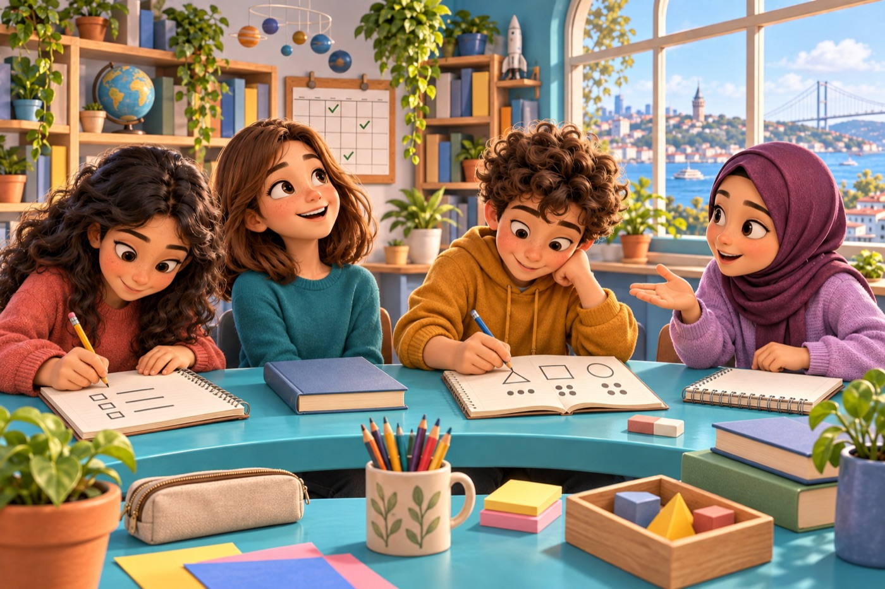
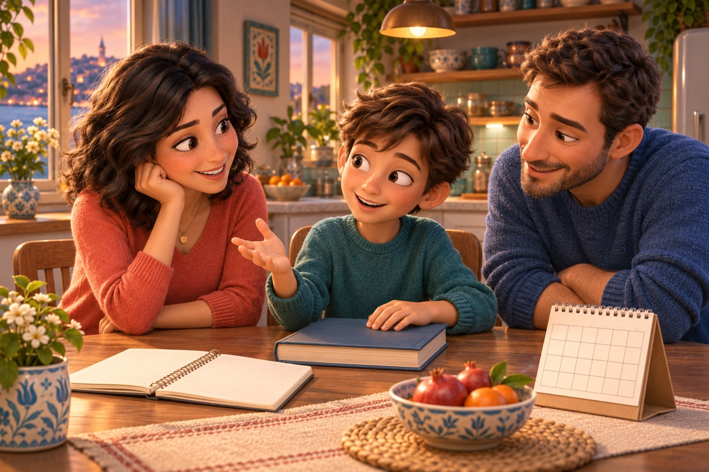

Veli için kısa bilgi
KALDIĞIN YER
TANIŞALIM
Sana nasıl seslenelim?
VELİ İÇİN
Çocuğunuz hakkındaki tahmininiz
Çocuğunuz testi çözmeden önce doldurun. Her satırda çocuğunuza hangisi daha çok benziyor? İkisini de yapıyorsa daha sık yaptığı tarafta "Çoğu zaman böyle"yi seçin. Tahmininiz yalnız sonuç sayfasındaki pilot bölümünde görünür.
BAK · KAYA keşfi
Sana hangisi daha çok benziyor? İkisini de yapıyorsan daha sık yaptığını seç.
Bazı öğrenciler
Bazı öğrenciler ise
Seçince bir sonraki duruma geçersin.
Bu tarayıcı kayıt yapmaya izin vermiyor; sayfayı kapatırsan cevaplar kaybolur.
Yarıyı geçtin!
Rehberin hazır. İstersen son duruma dönüp cevabını değiştirebilirsin.
KAYA · KALICI ÖĞRENMENİN DÖRT ANAHTARI
Öğrenme döngün
Dört anahtarın bugün
Her anahtarda iki yol var: o an kolay gelen yol ve bilgiyi kalıcı yapan yol. Etiket, yanıtlarında kalıcı yolu ne sıklıkla seçtiğini gösterir: Sık, Bazen ya da Henüz az.

Öğretmene not
Kaynaklar, yöntem ve sınırlar
Pilot: cevap dökümü